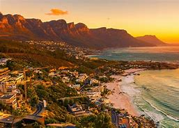
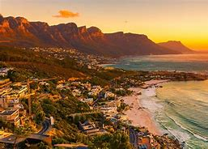

Cape Town (Afrikaans: Kaapstad) is the second most populous city in South Africa after Johannesburg and also the legislative capital of South Africa. Colloquially named the Mother City, it is the largest city of the Western Cape province and forms part of the City of Cape Town metropolitan municipality. The Parliament of South Africa sits in Cape Town.The other two capitals are located in Pretoria (the executive capital where the Presidency is based) and Bloemfontein (the judicial capital where the Supreme Court of Appeal is located).The city is known for its harbour, for its natural setting in the Cape Floristic Region, and for landmarks such as the Table Mountain and Cape Point. Cape Town is home to 64% of the Western Cape's population.The city was named the World Design Capital for 2014 by the International Council of Societies of Industrial Design.In 2014, Cape Town was named the best place in the world to visit by both The New York Times and The Daily Telegraph.Cape Town was one of the host cities of the tournaments of 1995 Rugby World Cup and 2010 FIFA World Cup. Located on the shore of Table Bay, Cape Town, as the oldest urban area in South Africa, was developed by the United East India Company (VOC) as a supply station for Dutch ships sailing to East Africa, India, and the Far East. Jan van Riebeeck's arrival on 6 April 1652 established VOC Cape Colony, the first permanent European settlement in South Africa. Cape Town outgrew its original purpose as the first European outpost at the Castle of Good Hope, becoming the economic and cultural hub of the Cape Colony.